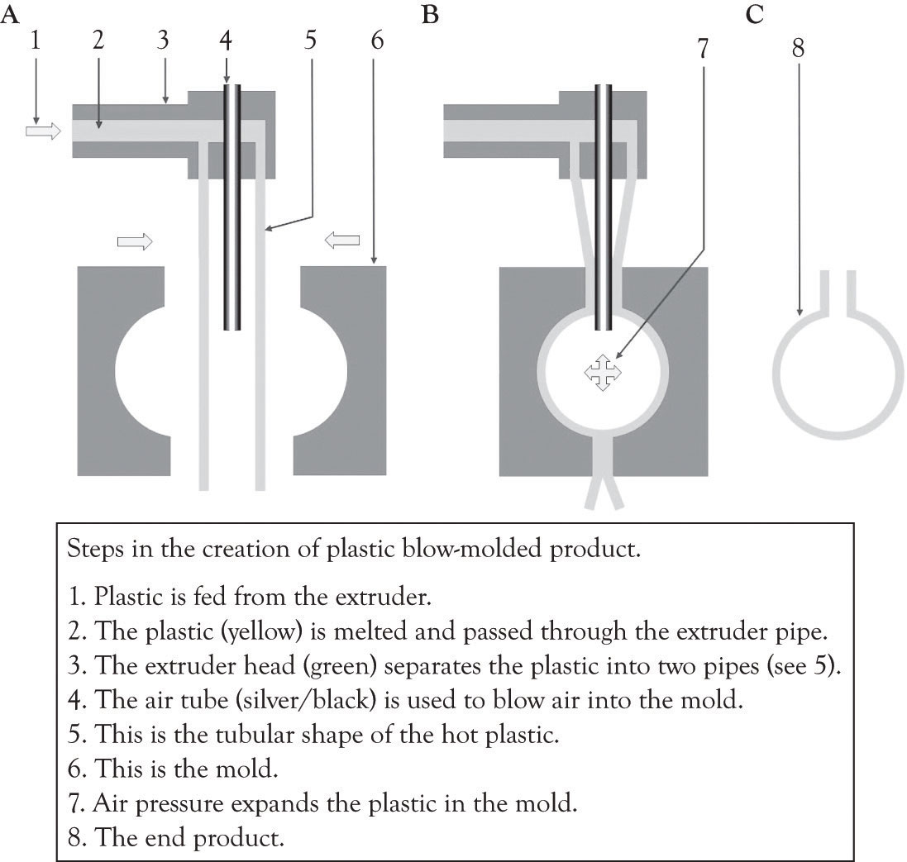
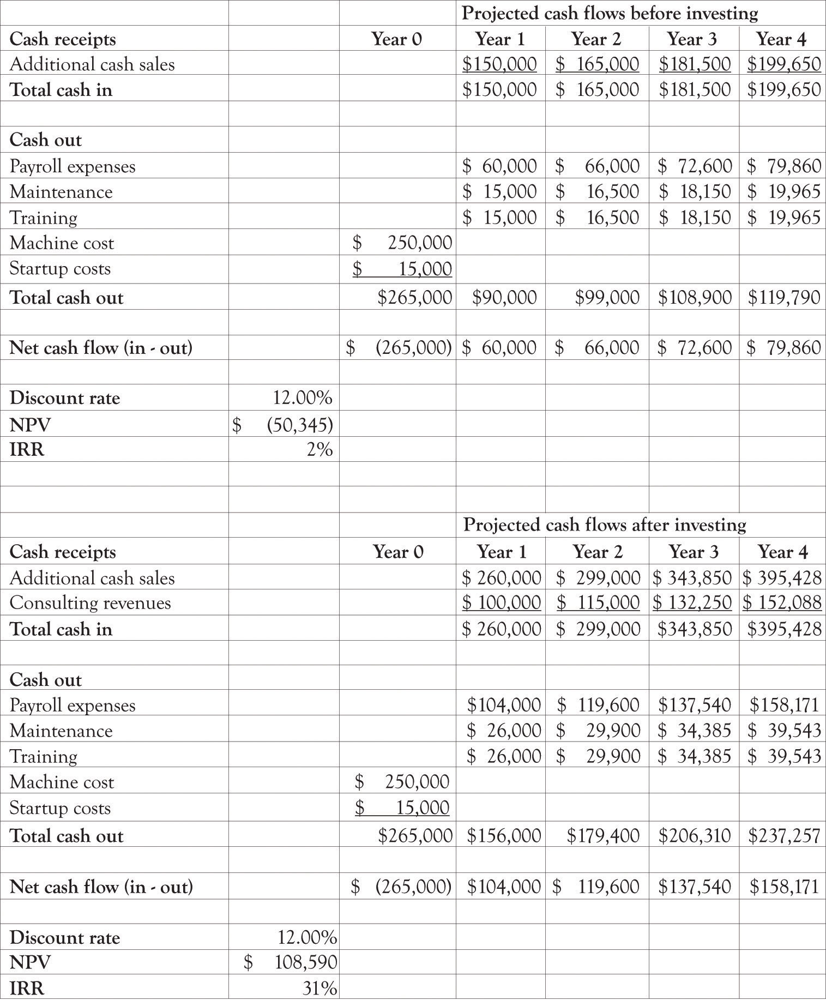

A real optionA decision or choice to invest a little or a lot in tangible assets, products, processes, technologies, and services rather than financial instruments such as stocks. is a decision or choice to invest a little or a lot in a product, a technology, or a project. They are called real options because they are investments in tangible assets, products, processes, and services rather than financial instruments such as stocks. For financial investments, option-pricing techniques are heavily used to take into account the flexibility issue. The most popular is the Black–Scholes option-pricing model where the option value is determined by five input values of the exercise price of an option, the time to exercise date, the current price of the asset, the variance per period of rate of return on asset, and the risk-free rate of interest. If you plug all these values into the Black–Scholes option-pricing model, you would get a positive value (do not forget all options have a positive value). This is the option value. This value would be added to the NPV analysis. So, what is initially a negative NPV would become a positive NPV once the project’s option value is incorporated. This calculation looks very simple. However, investments in technology differ from those in financial assets in terms of priceability and tradability of the underlying asset. Contrary to financial investments, in technology investment situations, the price of an underlying asset is hard to know, and the underlying asset cannot be traded easily.
The purpose of a real option is to explore the potential of a product or new technology. Car manufacturers are constantly making small investments (from their perspective) in emerging technologies. They purchase real options in fuel technologies, engine technologies, drive-by-wire technologies, steering and braking technologies, advanced construction materials, and design. Sometimes they invest a little money and just search for information and try to understand whether a technology is applicable and cost-effective. Sometimes they invest a lot of money and develop full-blown prototypes using a variety of technologies and showcase the technologies in the so-called concept cars. Sometimes they decide to go whole-hog and develop a fresh line with modern features and technologies. Sometimes they just abandon a product or a technology completely.
Amazon did not just settle into the production of the Kindle e-book. They explored various technologies such as the screen technologies, the book delivery mechanism, and the file format for storing the books as well as if consumers would be interested in reading e-books.
The following example illustrates how a real options analysis can be conducted.
Jin Beans Tonic Elixirs produces exotic health drinks containing a combination of vitamins, herbs, fruit extracts, and supplements.The company used in the example is fictitious. Jin Bean is a compendium of numerous examples of actual companies that have decided to go ahead with an investment in the face of negative values for NPV. See Mauboussin (1999); Mun (2005); Trigeorgis (1996), for additional examples that also include financial calculations. The competition is fearless and they compete with a number of highly competitive vitamin water, energy drink, and sports drink and boutique drinks in the water industry. They are known for delivering healthy drinks in unique high-quality safe plastic biodegradable containers. The super high quality of their ingredients, the design of their bottles, as well as the design of their labels set them apart from the competition.
Most of their bottles are being produced overseas and because they change the design of the bottles every 2 months, the cost of design, development, and delivery is very high. They are exploring the idea of manufacturing the bottles at each of their five bottling centers in the USA. This will require the purchasing of injection blow molding equipment (see Figure 14.3 "Blow Injection Molding Diagram", for an overview of the blow molding process).
The president of Jin Bean’s assembled a group of financial analysts; the marketing department and the operations department conducted a study to ascertain the cost of switching bottle production in-house. They determined that it would cost the company an additional $1 million per year to purchase the machines, hire staff, and maintain the machines over what they are currently paying to import their bottles. Each machine costs $250,000 and will involve personnel costs and maintenance costs exceeding $100,000. No matter how they put the numbers together, they could not generate a positive NPV. Even though the figures did not look good, the presidents of Jin Bean decided to go ahead and purchase one machine and install it in Florida. The decision of Jin Bean’s president was based on her knowledge of real options analysis. By purchasing and using one machine, they were able to learn and conduct an economic experiment. The company could obtain insight and also acquire the flexibility to expand in the future as the effect of the investment on the bottom-line gets clearer and knowledge about the use of the machine is accumulated.“Permission is granted to copy, distribute and/or modify this document under the terms of the GNU Free Documentation License, Version 1.2 or any later version published by the Free Software Foundation; with no Invariant Sections, no Front-Cover Texts, and no Back-Cover Texts. A copy of the license is included in the section entitled GNU Free Documentation License.” http://commons.wikimedia.org/wiki/File:Blow_molding.png
Figure 14.3 Blow Injection Molding Diagram
Developed by Laurens van Lieshout, available under Creative Commons Attribution share license.
The result of this experiment and installation was enlightening. Jin Bean was able to generate more sales with the new injection molding machine and they were also able to provide external consulting to other businesses and to sell specialized plastic containers at a premium price. Jin Bean also used the injection machine to experiment with new bottle designs and product ingredients. In the past, it would take them a year to introduce a new bottle to the market and several months to understand the sales results. Now they were able to deliver a new product in less than a year. They were able to increase their market share and became very responsive to market demands because of their increased flexibility. The data they were able to gather by experimenting with one machine was then used to conduct an NPV and IRR analysis and resulted in a very attractive return for their investment (see Figure 14.4 "Financial Analysis Before and After Installing One Machine"). Jin Bean subsequently decided to obtain four additional machines because they have the confidence to further pursue a growth option and invest in more injection molding machines.
Figure 14.4 Financial Analysis Before and After Installing One Machine
Many real-world investment decisions are not easily analyzed with NPV and IRR analysis. Investing in a new technology can take the firm down many different paths as the organization learns about and learns by doing and experimenting with new technology and products. If you look at most of the Blue Ocean markets—for example, Cirque du Soleil, social networking services or global positioning system products—they came about as a result of experimentation and the progression of little ahas that turn into the big aha. It is basically a learning and adaptation strategy that is focused on product and process differentiation.
Business conditions are fraught with uncertainty and risks. These uncertainties hold with them valuable information. When uncertainty becomes resolved through the passage of time, actions and events, managers can make the appropriate midcourse corrections through a change in business decisions and strategies. Real options incorporates this learning model, it is akin to having a strategic road map, while traditional analyses that neglect managerial flexibility will grossly undervalue certain projects and strategies.Mun (2005), p. 16.
Real options analysis can be very technical, requiring a significant amount of financial and technical scrutiny. However, we believe that using complicated calculations is overkill for small- and medium-sized businesses. Real options concepts are nevertheless important. The takeaway from the perspective of the entrepreneur is that you need to experiment with diversifying your portfolio of products and projects under consideration. This does not mean that you have to actually buy machinery, make products, and constantly modify your business processes, but it does mean that you should learn-about many products and technologies related to your business and learn-by-doing and experimenting when an opportunity looks promising.
There are two important considerations related to real options that companies should consider before making large investment decisions. The first important consideration is how will the investment interact with current investments, and the second important consideration is how will the competition respond to an investment decision.This section is based on an article by Kim and Sanders (2002).